- Home
- Browse
Horror Stories
Read the stories we love
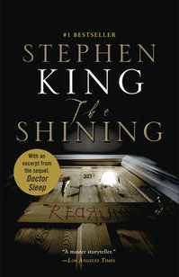 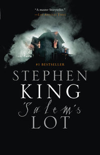 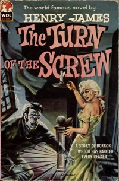 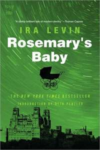 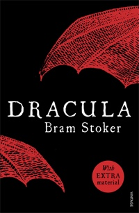 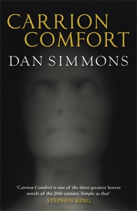 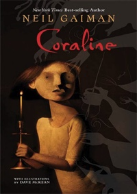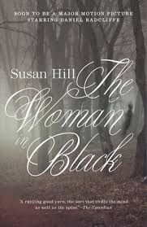 The Woman In Blackby Susan Hill
Ratings
One of the biggest tonal outliers on this list, Susan Hill’s The Woman in Black is crafted like a traditional gothic novel, and could likely fool readers into thinking that Hill is a few hundred years older than she truly is. Published in 1983, The Woman in Black is best known today for inspiring one of the longest-running plays in London’s West End (and a Daniel Radcliffe movie).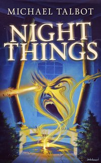 Night Thingsby Michael Talbot
Ratings
Night Things isn’t merely about a ghost haunting the halls of an old mansion, though—the lake house at the center of the novel is a labyrinthine creation taunting protagonist Lauren Montgomery’s family with hidden rooms, doors that open to nowhere and a macabre secret hidden at its center.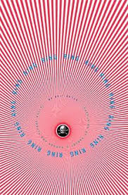 Ringby Koji Suzuki
Ratings
Gore Verbinki’s 2002 American adaptation of Koji Suzuki’s 1991 novel Ring utterly reshaped American horror cinema, ushering in a wave of J-horror imports, remakes and knockoffs and helping make the image of a ghostly Japanese woman with slick black hair ubiquitous the world over. While the broad strokes are the same, Verbinksi’s take (and director Hiroshi Takahashi’s Japanese adaptation before it) leans more supernatural than Suzuki’s.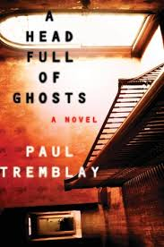 Head Full Of Ghostsby Paul Tremblay
Ratings
In this Bram Stoker Award-winning tale, author Paul Tremblay (whose follow-up, Disappearance at Devil’s Rock, is absolutely chilling if a bit baffling at the very end) manages to both examine the possession subgenre and break new ground with its tired tropes. Fourteen-year-old Marjorie Barrett starts displaying signs of schizophrenia, or maybe it’s just teenage rebellion…or maybe it’s something more.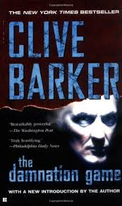 The Damnation Gameby Clive Barker
Ratings
The Damnation Game proved that Books of Blood wunderkind Clive Barker could sustain his brand of fear beyond the duration of a short story. Barker’s most compelling skill—the ability to blend lust and revulsion, desire and disgust—is on full display. In this depraved galleria of a novel, with graphic depictions of incest and cannibalism, an in-over-his-head bodyguard attempts to interfere a Faustian pact to save the relatively innocent daughter of a wealthy degenerate.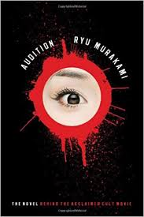 Audition
by Ryu Murakami
Ratings
Ryu Murakami’s Audition is outshined in popularity by Takeshi Miike’s film adaptation of the same name, and a case could be made that Miike’s version is the superior telling of the story. There’s something unforgettable about Murakami’s original prose though; blunt to the point of over-explanation, Murakami lays bare the psychology behind the plot, and forces the reader to confront his or her own role in the voyeurism of violence and manipulation.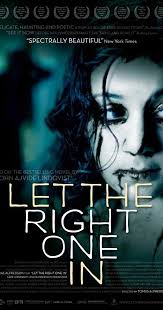 Let the Right One Inby John Lindqvist
Ratings
If fiction’s taught us anything in recent years, it’s that the vampire genre can be a tired—and ironically toothless—one. But Swedish writer John Ajvide Lindqvist breathed new life into the eternally overdone tale with his debut novel, Let the Right One In, which tells the story of a bullied grade-school student named Oskar and his new friend and neighbor, Eli. Eli is brilliant, deathly pale—not to mention dirty and smelly.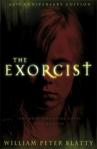 The Exorcistby William peter Blatty
Ratings
William Peter Blatty is better known today for the Academy Award-winning screenplay he adapted from his own novel than for the original text itself. Unlike The Shining, the film never diverges too widely from the source material, but that shouldn’t keep horror fans from picking up the novel.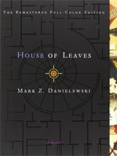 House Of Leavesby Mark Danielewaski
Ratings
The story within a story in House of Leaves would have been unsettling enough: a family moves into a house and slowly discovers that the inside is somehow larger than the outside. But Mark Z. Danielewski’s ambitions are much, much higher. House of Leaves is told in myriad ways, including layers of footnotes, sections with color-blocked words, fake interviews with real celebrities and passages that require you to transcribe the first letter of each sentence to reveal another chapter hidden within.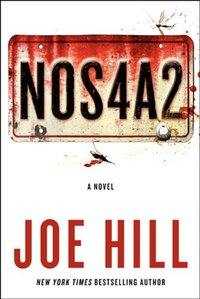 NOS4A2by Joe Hill
Ratings
Not one to be outdone by his dear old dad, Heart-Shaped Box and Horns author Joe Hill unleashed full holiday terror for his third novel, along with a warm embrace of the nostalgia-tinged magic so frequently employed by Stephen King. In NOS4A2, both Victoria McQueen and Charlie Manx can slip out of time and space when they ride the right vehicle: Vic can find lost things on her rickety bike, and Manx can journey to “Christmasland” in his vintage Rolls-Royce Wraith. Beyond the cheery name and amusement-park shine, Manx’ Christmasland is the last place good little boys and girls want to end up, and Vic is the only child who escapes a ride on the Wraith.